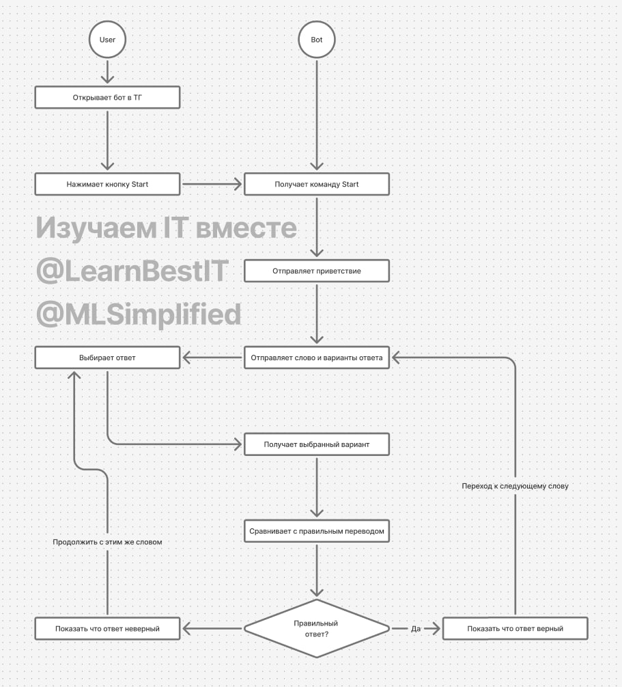

В прошлый раз мы научили бот получать и отправлять сообщения. Например, пусть код простого бота выглядит так:
import telebot
from telebot.types import Message
bot = telebot.TeleBot('... ваш токен ...')
@bot.message_handler()
def handle_message(message: Message):
info = f"""Вы написали: `{message.text}`
Пользователь: `{message.from_user.username}`
Чат: `{message.chat.id}`"""
print(info)
bot.send_message(message.chat.id, info, parse_mode="Markdown")
bot.infinity_polling()
Когда бот запущен, он будет отправлять ответы на сообщения в Telegram. Если бот остановлен, то ответы на сообщения не приходят.
Вы не можете всё время держать бот запущенным на вашем компьютере. Вместо этого используется сервер. Сегодня рассмотрим как запустить ваш бот на сервере.
Размещение бота на сервере - обычно платная услуга, которая называется хостингом. В интернет можно найти множество провайдеров хостинга, которые предлагают различные услуги. Вот некоторые из популярных хостинг-провайдеров в России:
| Провайдер | Основные услуги | Особенности | Сайт |
|---|---|---|---|
| Selectel | VPS, облачные серверы, колокация | Высокая производительность, поддержка 24/7 | selectel.ru |
| RUVDS | VPS, облачный хостинг | Доступные цены, масштабируемость | ruvds.com |
| Timeweb | Виртуальный хостинг, VPS | Простой интерфейс, надежная поддержка | timeweb.com |
| Beget | Виртуальный хостинг, VPS | Автоматические резервные копии, бесплатный SSL | beget.com |
| Hoster | Виртуальный хостинг, VPS | Защита от DDoS, гибкие тарифы | hoster.by |
| Majordomo | Виртуальный хостинг, VPS | Долгая история, широкий выбор услуг | majordomo.ru |
| Reg.ru | Хостинг, регистрация доменов | Надёжная защита, удобное управление доменами | reg.ru |
| FirstVDS | VPS | SSD-накопители, KVM-виртуализация | firstvds.ru |
| Jino | Виртуальный хостинг, VPS | Доступные цены, простая настройка | jino.ru |
| ITLand | Виртуальный хостинг, VPS | Защита от DDoS, круглосуточная поддержка | itland.ru |
Для данного курса мы будем использовать иностранный провайдер Railway. Он отличается простотой запуска бота, интеграцией с GitHub, и имеет бесплатный тарифный план.
Для того чтобы запустить бот на Railway, сначала нужно сохранить его код на GitHub.
Токен бота является конфиденциальной информацией. Поэтому не следует сохранять его в коде, поскольку там он открыт для всех. Вместо этого, сохраним его в переменной окружения.
Вот как это сделать:
Для примера получим значение переменной окружения Path и выведем его на экран:
# модуль os позволяет получать данные из операционной системы
from os import getenv
# функция getenv получает значение переменной окружения
path = getenv("Path")
# выводим на экран
print(path)
.envМожно добавить переменную окружения token в настройках системы Windows.
Однако на компьютере разработчика удобнее использовать файл .env. Для этого сначала установите
библиотеку python-dot при помощи команды: pip install python-dotenv.
Затем создайте файл .env в папке проекта в VS Code. Данный файл служит для сохранения дополнительных
переменных. Этот файл не добавляется в GitHub, поэтому можно использовать его для хранения токена.
Добавьте в файл переменную token таким образом:
TOKEN=... ваш токен ...
Затем испольуйте функцию load_dotenv:
from os import getenv
# импорт модуля dotenv
from dotenv import load_dotenv
# загрузить переменные окружения из файла
load_dotenv()
# получаем значение переменной окружения TOKEN
bot_token = getenv("TOKEN")
Вот как может выглядеть полный код бота с использованием переменной окружения для хранения токена бота:
import telebot
from telebot.types import Message
from os import getenv
from dotenv import load_dotenv
load_dotenv()
bot_token = getenv("TOKEN")
# выведем на экран не весь токен, а его последние 5 символов
print("Используем токен бота ...", bot_token[-5:])
bot = telebot.TeleBot(bot_token)
@bot.message_handler()
def handle_message(message: Message):
info = f"""Вы написали: `{message.text}`
Пользователь: `{message.from_user.username}`
Чат: `{message.chat.id}`"""
print(info)
bot.send_message(message.chat.id, info, parse_mode="Markdown")
bot.infinity_polling()
requirements.txtФайл requirements.txt используется в Python чтобы указать библиотеки необходимые для запуска проекта -
зависимости. Cоздадим этот файл, чтобы сервер мог автоматически установить нужные версии библиотек. Вот как это
делается:
pip freeze определяет зависимости вашего проекта и показывает их на экранеpip freeze > requirements.txt
Для нашего бота достаточно указать две библиотеки:
python-dotenv==1.0.0
pyTelegramBotAPI==4.12.0
Для указания номера версии можно использовать ~=, чтобы автоматически установились текущие (более
новые) версии библиотек:
pyTelegramBotAPI~=4.23.0
python-dotenv~=1.0.1
Мы рассматривали использование GitHub на первому курсе, так что у вас уже должна быть учетная запись. Вот что нужно для добавления кода вашего бота в GitHub:
bot.py и requirements.txtpython bot.py.
TOKEN - токен вашего бота.| Термин (EN) | Перевод (RU) | Краткое пояснение |
|---|---|---|
| Hosting | Хостинг | Услуга размещения и обслуживания серверов |
| Deployment | Развертывание | Процесс выгрузки приложения на сервер |
| Service | Сервис | Программный сервис или услуга |
| Provider | Провайдер | Компания, предоставляющая услуги |
| Dashboard | Панель управления | Интерфейс для управления сервисом |
| Dependencies | Зависимости | Внешние библиотеки, необходимые для работы |
| Build | Сборка | Процесс компиляции и подготовки приложения |
Составьте список из 10 или более способов, которыми бот может помочь пользователям в изучении английского языка.
Проявите творческий подход – идеи могут быть как реалистичными, так и фантазийными.
Примеры идей:
Придумайте 5 или более идей Telegram-ботов, которые могли бы быть полезны вашим друзьям, родственникам, однокурсникам или другим людям.
Примеры идей:
Разработайте сценарий взаимодействия пользователя с ботом для изучения английских слов.
Опишите последовательность шагов, которые выполняет пользователь и как на них реагирует бот.
Можно оформить в виде:
Пример сценария (текстовый формат):
/start.
Пример диаграммы:

Удачи в выполнении заданий! 🚀